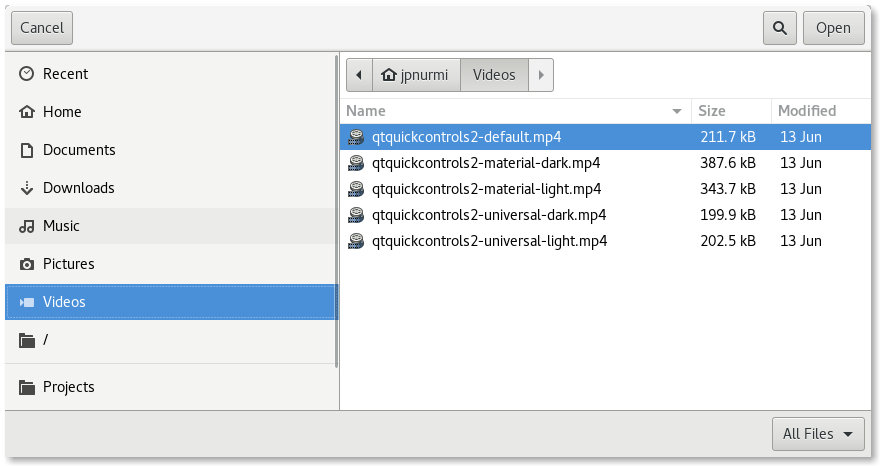

FileDialog QML Type
A native file dialog. More...
| Import Statement: | import Qt.labs.platform 1.1 |
| Since: | Qt 5.8 |
| Inherits: |
Properties
- acceptLabel : string
- currentFile : url
- currentFiles : list<url>
- defaultSuffix : string
- file : url
- fileMode : enumeration
- files : list<url>
- folder : url
- nameFilters : list<string>
- options : flags
- rejectLabel : string
- selectedNameFilter
- selectedNameFilter.index : int
- selectedNameFilter.name : string
- selectedNameFilter.extensions : list<string>
Detailed Description
The FileDialog type provides a QML API for native platform file dialogs.

To show a file dialog, construct an instance of FileDialog, set the desired properties, and call open(). The currentFile or currentFiles properties can be used to determine the currently selected file(s) in the dialog. The file and files properties are updated only after the final selection has been made by accepting the dialog.
MenuItem {
text: "Open..."
onTriggered: fileDialog.open()
}
FileDialog {
id: fileDialog
currentFile: document.source
folder: StandardPaths.writableLocation(StandardPaths.DocumentsLocation)
}
MyDocument {
id: document
source: fileDialog.file
}
Availability
A native platform file dialog is currently available on the following platforms:
- iOS
- Linux (when running with the GTK+ platform theme)
- macOS
- Windows
- WinRT
The Qt Labs Platform module uses Qt Widgets as a fallback on platforms that do not have a native implementation available. Therefore, applications that use types from the Qt Labs Platform module should link to QtWidgets and use QApplication instead of QGuiApplication.
To link against the QtWidgets library, add the following to your qmake project file:
QT += widgets
Create an instance of QApplication in main():
#include <QApplication> #include <QQmlApplicationEngine> int main(int argc, char *argv[]) { QApplication::setAttribute(Qt::AA_EnableHighDpiScaling); QApplication app(argc, argv); QQmlApplicationEngine engine; engine.load(QUrl(QStringLiteral("qrc:/main.qml"))); return app.exec(); }
Note: Types in Qt.labs modules are not guaranteed to remain compatible in future versions.
See also FolderDialog and StandardPaths.
Property Documentation
acceptLabel : string |
This property holds the label text shown on the button that accepts the dialog.
When set to an empty string, the default label of the underlying platform is used. The default label is typically Open or Save depending on which fileMode the dialog is used in.
The default value is an empty string.
See also rejectLabel.
currentFile : url |
This property holds the currently selected file in the dialog.
Unlike the file property, the currentFile property is updated while the user is selecting files in the dialog, even before the final selection has been made.
See also file and currentFiles.
This property holds the currently selected files in the dialog.
Unlike the files property, the currentFiles property is updated while the user is selecting files in the dialog, even before the final selection has been made.
See also files and currentFile.
defaultSuffix : string |
This property holds a suffix that is added to selected files that have no suffix specified. The suffix is typically used to indicate the file type (e.g. "txt" indicates a text file).
If the first character is a dot ('.'), it is removed.
file : url |
This property holds the final accepted file.
Unlike the currentFile property, the file property is not updated while the user is selecting files in the dialog, but only after the final selection has been made. That is, when the user has clicked OK to accept a file. Alternatively, the accepted() signal can be handled to get the final selection.
See also currentFile and accepted().
fileMode : enumeration |
This property holds the mode of the dialog.
Available values:
| Constant | Description |
|---|---|
FileDialog.OpenFile | The dialog is used to select an existing file (default). |
FileDialog.OpenFiles | The dialog is used to select multiple existing files. |
FileDialog.SaveFile | The dialog is used to select any file. The file does not have to exist. |
This property holds the final accepted files.
Unlike the currentFiles property, the files property is not updated while the user is selecting files in the dialog, but only after the final selection has been made. That is, when the user has clicked OK to accept files. Alternatively, the accepted() signal can be handled to get the final selection.
See also currentFiles and accepted().
folder : url |
This property holds the folder where files are selected. For selecting a folder, use FolderDialog instead.
See also FolderDialog.
This property holds the filters that restrict the types of files that can be selected.
FileDialog {
nameFilters: ["Text files (*.txt)", "HTML files (*.html *.htm)"]
}
Note: *.* is not a portable filter, because the historical assumption that the file extension determines the file type is not consistent on every operating system. It is possible to have a file with no dot in its name (for example, Makefile). In a native Windows file dialog, *.* will match such files, while in other types of file dialogs it may not. So it is better to use * if you mean to select any file.
See also selectedNameFilter.
This property holds the various options that affect the look and feel of the dialog.
By default, all options are disabled.
Options should be set before showing the dialog. Setting them while the dialog is visible is not guaranteed to have an immediate effect on the dialog (depending on the option and on the platform).
Available options:
| Constant | Description |
|---|---|
FileDialog.DontResolveSymlinks | Don't resolve symlinks in the file dialog. By default symlinks are resolved. |
FileDialog.DontConfirmOverwrite | Don't ask for confirmation if an existing file is selected. By default confirmation is requested. |
FileDialog.ReadOnly | Indicates that the dialog doesn't allow creating directories. |
FileDialog.HideNameFilterDetails | Indicates if the file name filter details are hidden or not. |
rejectLabel : string |
This property holds the label text shown on the button that rejects the dialog.
When set to an empty string, the default label of the underlying platform is used. The default label is typically Cancel.
The default value is an empty string.
See also acceptLabel.
These properties hold the currently selected name filter.
| Name | Description |
|---|---|
| index : int | This property determines which name filter is selected. The specified filter is selected when the dialog is opened. The value is updated when the user selects another filter. |
| [read-only] name : string | This property holds the name of the selected filter. In the example below, the name of the first filter is "Text files" and the second is "HTML files". |
| [read-only] extensions : list<string> | This property holds the list of extensions of the selected filter. In the example below, the list of extensions of the first filter is ["txt"] and the second is ["html", "htm"]. |
FileDialog {
id: fileDialog
selectedNameFilter.index: 1
nameFilters: ["Text files (*.txt)", "HTML files (*.html *.htm)"]
}
MyDocument {
id: document
fileType: fileDialog.selectedNameFilter.extensions[0]
}
See also nameFilters.